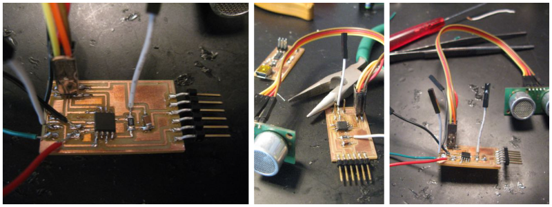
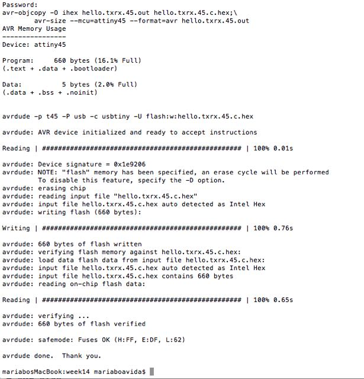
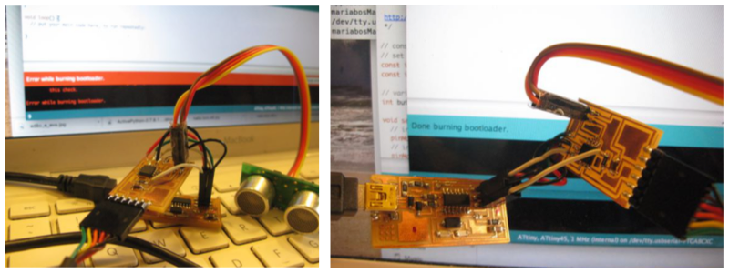

week 14: interface and application programming
sonar magic
This week, the assignment was to write an application that interfaces with an input &/or output device.
I chose to take the sonar sensor I made for input week and use Processing to make an interface for it.
I used this instructable as an example:
Since I had not managed to successfully finish programming part, I first had to get that out of the way. The ISP pins on my TXRX circuit were a bit damaged and I couldnt' get constant. So I decided to unsolder the ISP header and put jumpers on every pin (I din't have more headers on me at the time).
I carefully connected the ISP to the TXRX board and tried programming it with avrdude. On my first try, I got this:
I re-connected the ISP to the TXRX with even more care (pressing the jumpers a bit as I sent the code, to ensure there was contact with all pads) and tried again. No luck.
I tried unplugging the sonar sensor from the TXRX, before programming it. And this time, the avrdude was able to do his job:
BURNING THE BOOTLOADER
My circuit was now programmed and yet I was unable compile my arduino sonar sketch, so I decided to try burning the bootloader on the Arduino IDE, and then try compiling the sketch again. Burning the bootloader was not working either, until I realized I should unplug my sonar sensor, before compiling the sketch. This time, it worked just fine.
But suddenly at this point, the TXRX board fell on the floor and got seriously hurt. Since I couldn't mill my PCB again on time for this assignment, I decided to just plug the sonar to an arduino and move on with the Processing part.
PROCESSING
I used Processing for the interface part of my project.
I started by watching quite a few Processing tutorials by the Plethora Project and those were quite helpful:
Plethora project -- Processing tutorials
Here is a useful list of all the main commands in Processing
And here is useful info on how to connect Arduino to Processing.
I started by drawing simple objects and moving them around, changing color, size etc.
MAIN PROCESSING COMMANDS
Placing info above setup/draw --- it becomes part of the global library, which can be accessed anywhere in the script.
Two main commands:
void setup -- command to be run once at the beginning
void draw -- commands that relate to the animation
Other useful commands:
mouseX and mouseY (as replacement for static positioning coordinates)
smooth
map
val
println
string
speed
Different types of variables one can use to make animation:
integers (int) - for whole numbers ex: int x = 5;
floats - for decimal numbers ex: float y = 3.2;
strings - a way of storing an array of characters
This was the first sucessfull code I ran on Processing:
MOVING ELLIPSE
float x = 100;
float y = 100;
float speed = 10;
void setup() {
size(640, 460);
smooth ();
}
void draw(){
background (0);
ellipse (x, y, 40, 40);
x = x + speed;
float speed = 10;
}
THE PORT, WHERE IS MY PORT?
It was now time to load my sensor data on to Processing. To find out the name of my serial port, I listed all serial connections on Terminal:
To get the list, just type
ls /dev/tty.*
You can use the terminal command SCREEN for connecting to serial consoles.
If you know the serial port, you can just type "screen portname datarate" to show the serial data on the screen. In my case, it was:
screen /dev/tty.usbmodem411 9600
Once I knew my port name, I tried using several examples to see the sensor's data, but it simply wouldn't connect.
I knew nothing was wrong with the sensor, as I could see accurate readings with my sketch on the Arduino IDE.

After many hours of struggle, Processing finally accepted to read my sonar-measured distances. Turns out, it only likes to handle numbers, so when I went back to my arduino sketch and removed the commands that added "cm" at the end of each line and the "out of range" sentence, it started to work.
I used basic commands to ask Processing to draw an ellipse that would turn bigger or smaller according to the distance read.
Here is the code I used:
Sonar sensor -- Processing code
And here is a video showing the sonar interface at work: